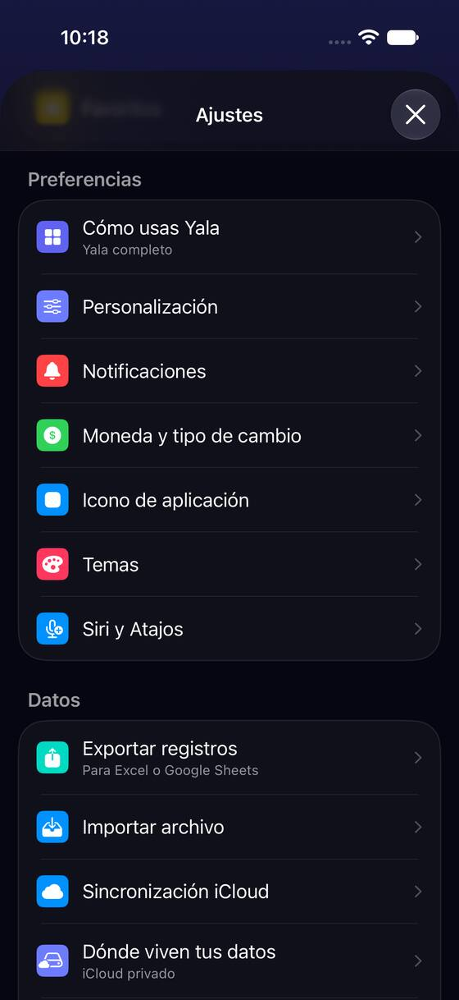
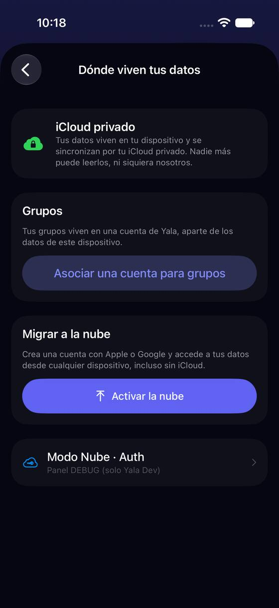
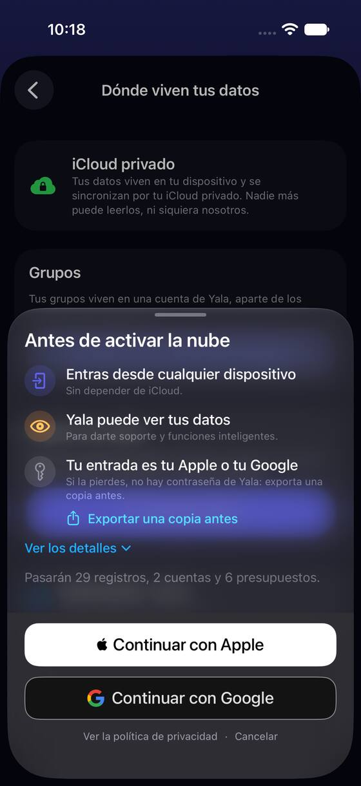
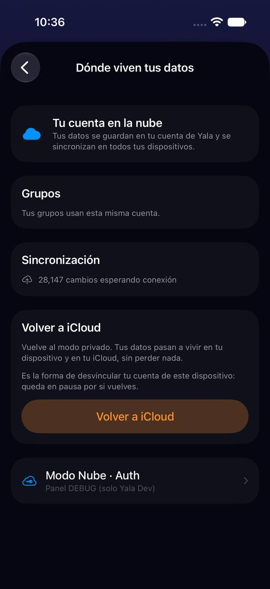

Para decir dónde están los datos, la app usa nueve nombres y seis verbos
Hoy
Capturas del simulador (app de origin/2.3, semillas de prueba). Pasos hoy: 9 nombres de sitio y 6 verbos




De dónde sale
- Captura Capturas a02, s01, h01 y f02 (semilla «minimal»; la nube, con el gancho de cuenta nacida en la nube y el modo guardado en «nube»).
- Medido Contado en
es.lproj/Localizable.strings(claves de almacenamiento, iCloud y la hoja): «tu iCloud» 19 veces, «cuenta de Yala» 18, «tu cuenta de la nube» 8, «nube de Yala» 5, «iCloud privado» 5, «modo privado» 2; «Migrar a la nube» 1 frente a «activar la nube» 25. - Código
storage.revert.desenlaceNote: «Es la forma de desvincular tu cuenta de este dispositivo: queda en pausa por si vuelves». - Código
storage.migrate.accountReuseNote: «así tus datos y tus grupos viven en la misma cuenta» (la única frase que lo dice).
Las opciones
De 3 a 5 alternativas con el mismo caso. Desliza cada recorrido; el anillo cian marca dónde toca Lucía.
Dos nombres fijos: «En tu iCloud» y «En tu cuenta de Yala»
Cada pantalla usa solo dos nombres para los dos sitios, y los verbos dicen el destino: «Pasar a tu cuenta de Yala» y «Volver a tu iCloud». «La nube» deja de ser un sitio y queda como explicación («tu cuenta de Yala vive en la nube»). Encaja con lo que ya pasa por dentro: la cuenta que guarda tus datos es la misma que usan tus grupos («así tus datos y tus grupos viven en la misma cuenta»). La pantalla pasa a ser una elección con las dos opciones a la vista y la actual marcada.
Solo tú puedes verlos. Viven en este iPhone y en tu iCloud.
Entras con Apple o Google desde cualquier dispositivo, también sin iCloud. El equipo de Yala puede verlos.
Entras con Apple o Google desde cualquier dispositivo. El equipo de Yala puede verlos.
Solo tú puedes verlos.
A favor
- Dos nombres en vez de nueve: Lucía aprende uno por sitio y lo encuentra igual en Ajustes, la hoja y los avisos.
- «Cuenta de Yala» deja de ser ambiguo: es una sola, la de sus grupos y (si quiere) sus datos.
- El verbo dice el destino: «Pasar a…» y «Volver a…» no necesitan explicación.
En contra
- Es un cambio de textos ancho: unas 60 cadenas en 16 idiomas (las de «nube» y «modo privado»).
- Quien ya aprendió «la nube» (la bienvenida usa «Tu cuenta en la nube») la verá cambiar; la bienvenida tendría que seguir.
- «En tu iCloud» no dice «privado»: lo dice la línea de debajo («Solo tú puedes verlos»).
Mantener «iCloud privado» y «la nube», y fijarlos
El cambio mínimo: se queda la pareja que ya usa la fila de Ajustes («iCloud privado» / «Tu cuenta en la nube») y se retiran los demás: «Migrar» pasa a «Activar», «modo privado» a «iCloud privado», «la nube de Yala» y «los servidores de Yala» a «la nube». «Cuenta de Yala» se queda solo para la entrada (Apple o Google).
Tus datos viven en este iPhone y en tu iCloud. Nadie más puede leerlos, ni siquiera nosotros.
Tus grupos usan tu cuenta de Yala.
Entra con Apple o Google y usa tus datos desde cualquier dispositivo, incluso sin iCloud.
Tus datos viven en la nube de Yala y se sincronizan en todos tus dispositivos.
Tus datos vuelven a este iPhone y a tu iCloud privado.
A favor
- Lo más barato: unas 20 cadenas y ningún cambio de pantalla.
- La fila de Ajustes ya dice estos nombres: no cambia lo aprendido.
- Deja abierta T1 para más adelante.
En contra
- «La nube» sigue sin decir de quién es: Lucía puede pensar que es iCloud (iCloud también es «la nube»).
- «Cuenta de Yala» y «tu cuenta en la nube» siguen siendo dos nombres para lo mismo.
- No resuelve que Grupos y los datos compartan cuenta sin decirlo.
Un dibujo de dónde están y quién puede verlos
Arriba de la pantalla, un dibujo de dos piezas (este iPhone → su destino) con el destino actual resaltado, y una tabla corta de tres filas que no cambia de forma entre los dos sitios: dónde están, quién puede verlos y con qué entras. Lucía compara las dos columnas antes de tocar nada.
Pasa tus datos a tu cuenta de Yala.
A favor
- Se entiende sin leer párrafos: lo mismo en las dos columnas, cambia el contenido.
- «Quién puede verlos» queda en la misma fila que «dónde están»: la diferencia que más pesa, a la vista.
- Sirve igual para P7 con VoiceOver (tres filas con etiqueta).
En contra
- Una pieza nueva (el dibujo) que hay que mantener en 16 idiomas y en texto grande.
- Añade un paso («Ver cómo cambia») antes de la hoja de hoy.
- No arregla por sí solo los nueve nombres del resto de avisos.
Dejar las palabras y añadir «¿Qué es cada cosa?»
Nada cambia en las pantallas salvo un enlace bajo el estado que abre una hoja con un glosario de cuatro entradas: iCloud privado, la nube de Yala, tu cuenta de Yala y «asociar una cuenta para grupos».
Tus datos viven en tu dispositivo y se sincronizan por tu iCloud privado.
Crea una cuenta con Apple o Google…
Tus datos en este iPhone y en tu iCloud. Solo tú los ves.
Tus datos en los servidores de Yala. Entras con Apple o Google.
Tu entrada con Apple o Google. La usan tus grupos y, si activas la nube, tus datos.
Usar tu cuenta de Yala solo para Grupos, sin mover tus datos.
A favor
- No cambia ninguna cadena existente: cero riesgo de romper lo aprendido.
- Explica la diferencia entre la cuenta y la nube, que hoy no está en ningún sitio.
En contra
- Quien no lee (P3) no lo abre: los nueve nombres siguen ahí.
- Pide leer un glosario para entender una pantalla de Ajustes.
- Fija por escrito una ambigüedad en vez de quitarla.
Lado a lado
La última pantalla de cada recorrido, frente a hoy.
Entras con Apple o Google desde cualquier dispositivo. El equipo de Yala puede verlos.
Solo tú puedes verlos.
Tus datos viven en la nube de Yala y se sincronizan en todos tus dispositivos.
Tus datos vuelven a este iPhone y a tu iCloud privado.
Tus datos en este iPhone y en tu iCloud. Solo tú los ves.
Tus datos en los servidores de Yala. Entras con Apple o Google.
Tu entrada con Apple o Google. La usan tus grupos y, si activas la nube, tus datos.
Usar tu cuenta de Yala solo para Grupos, sin mover tus datos.
Comparación
| Opción | Pasos para el caso (maqueta) | Esfuerzo | Riesgo | Reabre |
|---|---|---|---|---|
| Hoy | 9 nombres de sitio y 6 verbos | — | — | — |
| T1 · Dos nombres fijos: «En tu iCloud» y «En tu cuenta de Yala» | 2 nombres de sitio y 2 verbos (hoy 9 nombres y 6 verbos) | medio (textos) | bajo | — |
| T2 · Mantener «iCloud privado» y «la nube», y fijarlos | 4 nombres de sitio y 2 verbos | bajo (textos) | bajo | — |
| T3 · Un dibujo de dónde están y quién puede verlos | 1 toque más antes de la hoja | medio | bajo | — |
| T4 · Dejar las palabras y añadir «¿Qué es cada cosa?» | 1 toque y una hoja de lectura | bajo | bajo | — |
Lente de perfiles
Perfiles simulados, no entrevistas Los siete perfiles de la revisión del usuario nuevo, usados como lentes. riesgo alto de trabarse · medio · bajo.
| Perfil | Hoy | T1 | T2 | T3 | T4 |
|---|---|---|---|---|---|
| P1 · Migrante de Excel | ¿dónde está? | sabe dónde está | «nube» de quién | ve dónde está | lee si quiere |
| P2 · Principiante abrumado | nueve nombres | dos palabras | iCloud también es nube | dibujo | tiene que abrirlo |
| P3 · Anotador rápido que no lee | «Migrar» asusta | el botón dice adónde | botón igual al título | un paso más | no lo abre |
| P4 · Experto de otra app | ¿nube de quién? | «puede verlos» a la vista | ¿qué nube? | compara | le basta |
| P5 · Llega por una invitación de grupo | su cuenta ≠ «la nube» | su cuenta de Grupos es la misma | cuenta de Yala ≠ nube | no dice lo de Grupos | entiende si lo lee |
| P6 · Varias monedas y tarjeta | — | — | — | — | — |
| P7 · Texto grande, a veces en iPad | textos largos | menos texto que leer | igual que hoy | dibujo con texto grande | una hoja más |
Recomendación: T1
La confusión de fondo no es la palabra «nube»: es que «cuenta de Yala» y «la nube» sean lo mismo sin decirlo, y que la cuenta de Grupos sea esa misma. T1 usa ese hecho como nombre y lo deja en dos palabras. Si se quiere ir por partes, T2 primero (barato) y T1 al cambiar la bienvenida. El dibujo de T3 se puede sumar a T1 más adelante.
Qué decide Jürgen
- ¿Dos nombres fijos, «En tu iCloud» y «En tu cuenta de Yala», con «Pasar a» / «Volver a» (T1)? ¿O el mínimo de T2?
- Si T1: ¿la bienvenida («Tu cuenta en la nube») cambia en la misma entrega?
- ¿«Desvincular tu cuenta de este dispositivo» se retira de la tarjeta de volver (ver problema 3)?
Revisión por vistas 2.3 · Dónde viven tus datos: nube, iCloud y cierre de sesión. Maquetas en HTML con datos ficticios: no son la app. Pasos contados sobre las maquetas; los de «Hoy», en el simulador o en el código citado.